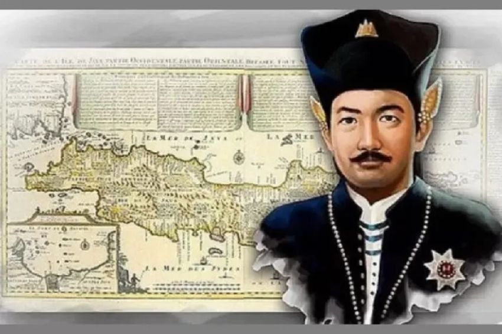

Latar Belakang
Kerajaan Mataram Islam adalah salah satu kerajaan Islam terbesar dan paling berpengaruh yang pernah berdiri di tanah Jawa. Kerajaan ini bermula dari wilayah pedalaman Jawa, khususnya di daerah Kotagede, yang kini menjadi bagian dari Yogyakarta. Mataram Islam berdiri pada akhir abad ke-16 M, sebagai hasil dari perkembangan dan penyebaran agama Islam di Jawa Tengah dan Jawa Timur setelah runtuhnya Kerajaan Majapahit. Berdirinya kerajaan ini juga tidak terlepas dari peran Kerajaan Pajang sebagai penghubung antara tradisi Hindu-Buddha dan masuknya pengaruh Islam.
Pendiri Mataram Islam adalah Panembahan Senopati, yang memiliki nama asli Danang Sutawijaya. Ia adalah putra dari Ki Ageng Pemanahan, seorang tokoh penting dan pengikut setia Sultan Hadiwijaya (Jaka Tingkir), raja Kerajaan Pajang. Sebagai bentuk penghargaan atas jasa Ki Ageng Pemanahan, Sultan Hadiwijaya menghadiahkan sebidang tanah di wilayah Mataram. Setelah kematian ayahnya, Sutawijaya mewarisi tanah tersebut dan mulai membangun kekuatannya. Ia kemudian memisahkan diri dari kekuasaan Pajang dan pada sekitar tahun 1586 M, memproklamasikan berdirinya Kerajaan Mataram Islam dengan pusat pemerintahan di Kotagede.
Kerajaan ini memadukan nilai-nilai Islam dengan warisan budaya Jawa yang dipengaruhi Hindu-Buddha. Proses akulturasi tersebut tampak dalam berbagai aspek, seperti sistem pemerintahan, seni budaya, tradisi, hingga arsitektur. Mataram Islam dianggap sebagai penerus dari Kerajaan Majapahit secara budaya dan dari Kerajaan Pajang secara politik. Di bawah Panembahan Senopati dan raja-raja penerusnya, kerajaan ini berkembang pesat.
Puncak kejayaan Mataram Islam terjadi pada masa pemerintahan Sultan Agung (1613–1645). Di bawah kepemimpinannya, Mataram menjadi kekuatan besar di Pulau Jawa, dengan wilayah kekuasaan yang luas mencakup hampir seluruh Jawa Tengah dan sebagian besar Jawa Timur dan Jawa Barat. Sultan Agung juga dikenal karena upayanya melawan dominasi Belanda (VOC) di Batavia, meskipun usahanya belum membuahkan hasil kemenangan militer.
Setelah masa keemasan, Kerajaan Mataram mengalami perpecahan akibat konflik internal dan tekanan dari VOC. Akhirnya, pada abad ke-18, Mataram terpecah menjadi dua kekuasaan besar: Kesultanan Yogyakarta dan Kasunanan Surakarta, yang masih bertahan sebagai simbol budaya Jawa hingga hari ini.

Panembahan Senopati
Panembahan Senopati, yang memiliki nama asli Danang Sutawijaya, adalah pendiri sekaligus raja pertama Kerajaan Mataram Islam. Ia lahir di daerah Selo, Grobogan sekitar tahun 1520-an. Ia adalah putra dari Ki Ageng Pemanahan dan Nyai Sabinah. Ayahnya merupakan tokoh penting yang berjasa kepada Sultan Hadiwijaya dari Kerajaan Pajang, sehingga keluarga mereka diberi tanah di Mataram, yang kelak menjadi pusat kerajaan baru.
Panembahan Seda ing Krapyak
Raden Mas Jolang merupakan putra dari Panembahan Senopati dan Permaisuri Waskitajawi. Ia adalah cucu dari Ki Ageng Pemanahan, tokoh yang berjasa membuka Alas Mentaok bersama Panembahan Senopati. Garis keturunan Raden Mas Jolang dapat ditelusuri hingga Raja Brawijaya V dari Majapahit, melalui keturunan Nawangsih, Ki Ageng Getas Pendowo, Ki Ageng Sela, dan Ki Ageng Nis, yang kemudian menurunkan Panembahan Senopati.


Sultan Agung Hanyokrokusumo
Sultan Agung Hanyokrokusumo adalah raja terbesar Kesultanan Mataram Islam yang memerintah antara tahun 1613-1645. Ia lahir pada tahun 1593 di Kotagede Mataram dengan nama asli Raden Mas Rangsang (atau Jatmika), putra dari Prabu Hanyokrowati dan Ratu Mas Adi Dyah Banowati. Sultan Agung naik takhta pada usia 20 tahun dan menerima berbagai gelar sepanjang hidupnya, salah satunya dari pemimpin Ka'bah di Makkah: Sultan Abdullah Muhammad Maulana Mataram, namun ia lebih dikenal dengan gelar Sultan Agung Hanyokrokusumo.
Sunan Amangkurat I
Sunan Amangkurat I, lahir sekitar tahun 1618–1619, adalah putra dari Sultan Agung Hanyokrokusumo dan Ratu Wetan. Nama aslinya adalah Raden Mas Sayidin, dan ia mendapat gelar lengkap Amangkurat Senapati ing Alaga Ngabdurrahman Sayidin Panatagama. Ia naik takhta menggantikan ayahnya dan memerintah Kerajaan Mataram Islam pada pertengahan abad ke-17.


Sunan Amangkurat II
Amangkurat II merupakan Sultan Mataram Islam yang memerintah dari tahun 1677 hingga 1703. Ia dikenal sebagai tokoh kontroversial dan haus kekuasaan. Nama kecilnya adalah Raden Mas Rahmat, anak dari Amangkurat I dan Ratu Kulon. Sejak kecil, ia diasuh oleh kakeknya, Pangeran Pekik, di Surabaya karena ibunya meninggal dunia. Gelar Adipati Anom sempat disandangnya, namun kemudian dicabut oleh ayahnya akibat serangkaian konflik.
Kehidupan Sosial

Kehidupan sosial masyarakat Kerajaan Mataram pada masa lampau sangat erat kaitannya dengan sektor agraris. Sebagai kerajaan yang berkembang di wilayah pedalaman Jawa yang subur, mayoritas masyarakatnya hidup dari pertanian. Aktivitas utama penduduknya adalah bercocok tanam, terutama menanam padi di sawah dan palawija di ladang. Sistem pertanian yang berkembang menjadi fondasi utama dalam struktur sosial dan perekonomian kerajaan.
Kecenderungan masyarakat yang agraris ini terlihat jelas dalam kebijakan pemerintahan Sultan Agung, yang memerintah dari tahun 1613 hingga 1645. Dalam upaya memperkuat basis ekonomi kerajaan dan memperluas lahan pertanian, Sultan Agung melakukan pemindahan penduduk atau transmigrasi ke daerah-daerah yang subur. Salah satu contohnya adalah pemindahan petani ke wilayah Karawang yang terkenal karena kesuburannya. Langkah ini tidak hanya memperluas areal pertanian, tetapi juga meningkatkan produksi bahan pangan serta mendukung ketahanan pangan kerajaan. Kebijakan ini menjadi bukti nyata bahwa pertanian menjadi sektor utama dalam kehidupan masyarakat Mataram.
Bersamaan dengan perkembangan sistem pertanian, terbentuk pula struktur sosial yang bersifat feodal. Dalam sistem ini, kekuasaan bersifat hierarkis dan sangat tergantung pada hubungan antara penguasa pusat dan bawahan di daerah. Para pejabat kerajaan, termasuk bangsawan dan prajurit tinggi, memperoleh imbalan berupa tanah garapan atau hak untuk menarik pajak dari tanah yang mereka kuasai. Imbalan ini disebut dengan "lungguh" atau "apanage", yang artinya pemberian hak atas tanah kepada pejabat sebagai bentuk jasa dan loyalitas kepada raja.
Dengan diberikannya hak atas tanah, para pejabat lokal mulai memiliki kekuasaan tersendiri di wilayahnya. Kepala desa atau lurah, misalnya, seringkali menganggap tanah yang ia kelola sebagai milik pribadinya. Meskipun secara hukum tanah tersebut masih berada dalam kekuasaan raja, dalam praktiknya kepala desa bertindak seperti tuan tanah. Ia memiliki kewenangan mengatur distribusi tanah, menarik pajak dari para petani, bahkan menentukan siapa saja yang boleh tinggal dan mengolah lahan. Dari sinilah muncul sistem sosial yang mengarah pada pembentukan kelas tuan tanah di Jawa.
Struktur sosial ini memperlihatkan adanya pembagian kelas dalam masyarakat. Di puncak hierarki adalah raja sebagai pemegang kekuasaan tertinggi. Di bawahnya terdapat bangsawan dan pejabat kerajaan yang memperoleh hak atas tanah. Di lapisan bawah terdapat rakyat biasa, terutama para petani, yang wajib membayar pajak atau menyerahkan sebagian hasil panennya kepada pemegang hak tanah. Sistem ini memperkuat posisi elit lokal dan menciptakan ketimpangan sosial yang bertahan hingga masa kolonial.
Secara keseluruhan, kehidupan sosial Kerajaan Mataram mencerminkan keterkaitan erat antara sektor agraris dan sistem feodal. Kebijakan pertanian yang dijalankan oleh Sultan Agung berhasil membangun kekuatan ekonomi kerajaan, namun juga membentuk struktur sosial yang hierarkis. Sistem ini menjadi cikal bakal dari pola hubungan kekuasaan dan kepemilikan tanah di Jawa yang mempengaruhi dinamika sosial hingga berabad-abad kemudian.
Kehidupan Ekonomi

Kerajaan Mataram merupakan kerajaan besar yang terletak di daerah pedalaman Pulau Jawa. Lokasinya yang jauh dari garis pantai membuat kerajaan ini tidak berada di jalur utama perdagangan maritim yang saat itu berkembang pesat di wilayah Asia Tenggara. Karena tidak memiliki pelabuhan besar yang langsung terhubung dengan jalur niaga internasional, Kerajaan Mataram pun tidak mengandalkan perdagangan sebagai sektor utama perekonomiannya.
Sebagai gantinya, kehidupan ekonomi Kerajaan Mataram sangat bergantung pada sektor agraris. Sebagian besar penduduknya bermata pencaharian sebagai petani yang mengolah lahan pertanian untuk memenuhi kebutuhan hidup sehari-hari dan sebagai sumber penghasilan. Hasil pertanian seperti padi, palawija, serta hasil kebun menjadi komoditas utama dalam roda perekonomian. Kondisi geografis yang subur serta adanya sistem irigasi tradisional membantu mendukung keberlangsungan kegiatan pertanian ini.
Sektor perdagangan sendiri tidak memperoleh perhatian besar dari para penguasa Mataram. Berbeda dengan kerajaan-kerajaan maritim seperti Kerajaan Demak atau Kerajaan Makassar, Kerajaan Mataram tidak menunjukkan minat serius untuk membangun kekuatan ekonomi berbasis niaga atau menjalin hubungan dagang dengan bangsa-bangsa luar. Perdagangan tetap ada, tetapi bersifat lokal dan terbatas pada kebutuhan antardaerah di sekitar wilayah kekuasaan Mataram. Pasar-pasar rakyat berkembang di pedesaan dan kota-kota kecil, tetapi belum mampu menopang sistem ekonomi yang besar atau berskala regional.
Kondisi ini diperburuk dengan jatuhnya kota-kota pelabuhan penting di pesisir utara Pulau Jawa ke tangan Vereenigde Oostindische Compagnie (VOC) atau Kongsi Dagang Belanda. Kota-kota pelabuhan seperti Jepara, Tuban, Gresik, dan Surabaya yang sebelumnya menjadi pintu perdagangan penting di Jawa, perlahan-lahan dikuasai oleh VOC. Penguasaan ini membuat Kerajaan Mataram kehilangan akses langsung terhadap pelabuhan dagang, sehingga aktivitas niaga menjadi semakin terbatas dan tidak berkembang. VOC juga secara perlahan memonopoli perdagangan rempah dan komoditas lainnya, menjadikan kerajaan-kerajaan pedalaman seperti Mataram semakin tersingkir dari arena perdagangan internasional.
Dengan demikian, kehidupan ekonomi Kerajaan Mataram didominasi oleh pola agraris yang bersifat subsisten. Ketergantungan terhadap hasil pertanian menjadi ciri utama ekonomi kerajaan ini, sementara sektor perdagangan tidak menjadi prioritas dan cenderung terpinggirkan. Kondisi ini memengaruhi arah kebijakan ekonomi kerajaan dan menjadi salah satu faktor yang membedakan Mataram dari kerajaan-kerajaan maritim lainnya di Nusantara.
Kehidupan Budaya

Pada masa kekuasaan Kerajaan Mataram, kehidupan kebudayaan berkembang dengan cukup pesat dan mencerminkan perpaduan antara tradisi lokal dengan pengaruh Islam. Perkembangan ini tampak dalam berbagai bidang seni dan kesusastraan, yang kemudian menjadi bagian penting dalam identitas budaya Jawa pada masa itu.
Dalam bidang seni, masyarakat Mataram mengembangkan berbagai bentuk kesenian seperti seni tari, seni pahat, seni suara, dan sastra. Seni tari berkembang sebagai bagian dari tradisi istana yang sarat makna simbolis dan spiritual. Tari-tarian seperti Bedhaya dan Serimpi diciptakan untuk menggambarkan keanggunan, kewibawaan, serta nilai-nilai luhur keraton. Tari-tarian ini umumnya ditampilkan dalam lingkungan istana sebagai bagian dari upacara adat, penyambutan tamu kehormatan, atau perayaan penting kerajaan.
Seni suara, seperti tembang dan gamelan, juga mendapat tempat istimewa dalam kehidupan budaya Mataram. Musik gamelan digunakan dalam berbagai acara ritual, baik yang bersifat keagamaan maupun kenegaraan. Keindahan nada-nada gamelan dan syair-syair tembang menjadi sarana penting dalam menyampaikan nilai-nilai moral dan ajaran kehidupan.
Seni pahat dan arsitektur juga mengalami kemajuan. Masyarakat Mataram menghasilkan berbagai karya ukiran kayu dan batu yang memiliki ciri khas Jawa-Islam. Gaya arsitektur istana, masjid, dan makam menunjukkan perpaduan antara elemen Hindu-Buddha yang telah ada sebelumnya dengan unsur-unsur Islam yang dibawa oleh para wali dan ulama.
Salah satu bukti akulturasi budaya lokal dengan Islam terlihat dari sistem kalender Jawa yang dikembangkan oleh Sultan Agung, salah satu raja terbesar Kerajaan Mataram. Kalender tersebut merupakan hasil perpaduan antara sistem kalender Saka (Hindu) dengan kalender Hijriyah (Islam). Tujuannya adalah untuk menyesuaikan waktu-waktu keagamaan Islam dengan tradisi budaya Jawa yang telah mengakar.
Sultan Agung juga dikenal sebagai sosok yang memiliki minat tinggi terhadap sastra dan filsafat. Ia menulis sebuah karya berjudul Sastra Gending, sebuah kitab yang berisi ajaran moral, filosofi kehidupan, dan petuah kebijaksanaan yang ditulis dalam bentuk puisi tradisional Jawa.
Di samping itu, Sultan Agung juga membangun kompleks pemakaman raja-raja Mataram di Bukit Imogiri, Yogyakarta. Kompleks ini menjadi tempat pemakaman khusus bagi para raja dan keturunan mereka, baik dari Kasultanan Yogyakarta maupun Kasunanan Surakarta. Imogiri bukan hanya tempat peristirahatan terakhir para raja, tetapi juga simbol kekuasaan, legitimasi, dan warisan budaya Kerajaan Mataram yang dijaga hingga sekarang.
Kemunduran
Kerajaan Mataram mengalami masa kejayaan yang cukup panjang, terutama di bawah pemerintahan Sultan Agung. Namun, setelahnya kerajaan ini mengalami kemunduran yang bertahap akibat berbagai faktor, baik dari dalam maupun luar kerajaan. Tiga penyebab utama kemunduran Mataram adalah masuknya pengaruh VOC, perjanjian-perjanjian politik yang merugikan, serta konflik internal di antara para adipati pesisir.
Salah satu penyebab utama kemunduran Mataram adalah masuknya campur tangan Vereenigde Oostindische Compagnie (VOC), atau Kongsi Dagang Belanda, ke dalam urusan politik kerajaan. Awalnya, VOC hanya terlibat dalam hubungan dagang, namun lama kelamaan mereka turut campur dalam konflik internal dan perebutan kekuasaan di lingkungan istana. Amangkurat II, misalnya, meminta bantuan VOC untuk menghadapi pemberontakan Trunojoyo. Sebagai imbalannya, Mataram harus menyerahkan sebagian wilayah pesisir utara Jawa kepada VOC dan membayar utang dalam jumlah besar. Ketergantungan ini membuka jalan bagi VOC untuk mengendalikan kebijakan politik dan ekonomi kerajaan.
Selain itu, perjanjian-perjanjian politik yang dilakukan Mataram dengan VOC justru mempercepat kehancuran kerajaan. Dua perjanjian penting yang sangat memengaruhi kedaulatan Mataram adalah Perjanjian Giyanti (1755) dan Perjanjian Salatiga (1757). Perjanjian Giyanti membagi wilayah Mataram menjadi dua, yaitu Kesultanan Yogyakarta di bawah Sultan Hamengkubuwono I dan Kasunanan Surakarta yang tetap dipimpin oleh Susuhunan Pakubuwono III. Tak lama kemudian, Perjanjian Salatiga kembali memecah kekuasaan dengan mendirikan Kadipaten Mangkunegaran di bawah pimpinan Raden Mas Said (Mangkunegara I). Pemecahan ini dilakukan dengan dukungan VOC demi melemahkan kekuatan Mataram secara keseluruhan dan memudahkan kontrol Belanda terhadap wilayah Jawa.
Faktor lain yang turut mempercepat kemunduran Mataram adalah konflik internal antara para adipati atau penguasa daerah, terutama di wilayah pesisir. Para adipati ini sering kali berselisih satu sama lain, bahkan melawan kekuasaan pusat (keraton). Perselisihan ini disebabkan oleh perebutan wilayah, ketidakpuasan terhadap kebijakan kerajaan, serta hasutan dari pihak VOC yang ingin memecah belah kesatuan Mataram. Akibatnya, solidaritas politik dan militer kerajaan melemah, sehingga kekuatan pusat tidak mampu lagi mengendalikan wilayah-wilayah luar.
Secara keseluruhan, kemunduran Kerajaan Mataram disebabkan oleh intervensi asing, perjanjian-perjanjian politik yang memecah belah, dan konflik internal berkepanjangan. Faktor-faktor ini menjadikan Mataram kehilangan wibawa dan kekuatannya sebagai kerajaan besar di Nusantara.